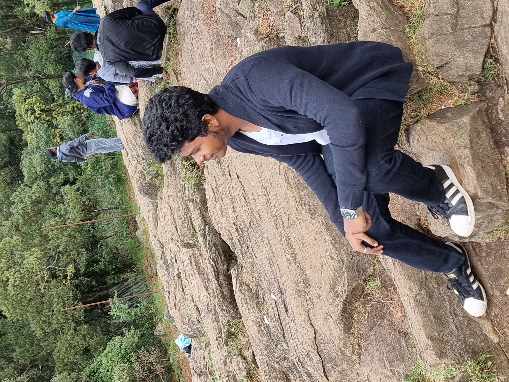

I am Veer Viswajit.N, it's my amateur attempt for web dev... To tell About myself,
- I am good at studying a bit and also mastered the skill of procrastination, but i don't miss out the deadlines
- I am big time movie buff, Can't say that i watch all films but i don't leave out the cult classics
- I love watching series
- I love coding and currently learing to be a full stack developer
- I happen to be a fun person as regarded by my friends and family
- I consider myself to be having a personality of an Ambivert
Skills
-
Programming Languages:
- Competitive programming and Object Oriented programming: Python, Java, C++, C
- Scripting Language: Python, JavaScript
- Machine Learning in Python
- Front-end Programming: HTML, CSS, Bootstrap
- Database: MySQL, Firebase
- Language: R, Arm, Bash
Projects
-
Web Development Portfolio
Developed dynamic and responsive web pages for diverse projects and hackathons, including a personal portfolio website
-
Python multitasking app: Synergia
Created a Python multitasking app seamlessly blends Spotify, a to-do planner, shell GUI and Google Calendar(use of APIs), offering efficiency with real-time updates, cross platform compatibility, and room for enhanced features.
-
Python based Student Record Manager
Implemented a Python and MySQL integrated project focused on maintaining student records, incorporating Firebase for secure authentication to access the database